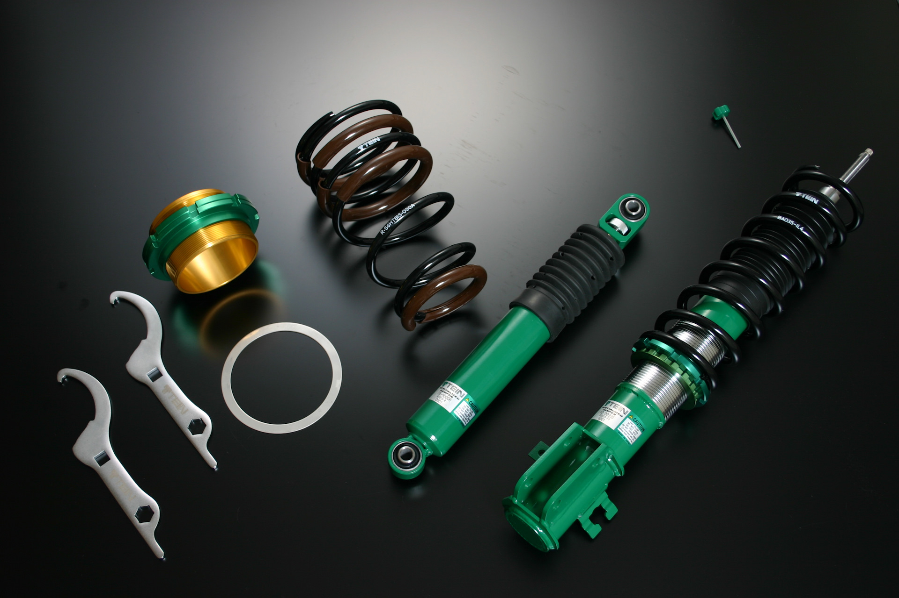

Основное различие разных видов стенса — в фитменте. Словом «fitment» любители тюнинга обозначают положение колес относительно кузова. При этом фитмент зависит от нескольких параметров — расстояния от кромки диска до кромки крыла, степени вылета колеса и угла развала, а также от профиля шины. Для большей наглядности на иллюстрации ниже схема подвески изображена в порядке усложнения модернизации. Но обо всем по порядку.
Первый пример — заводская конфигурация с большими ходами подвески и стандартными амортизаторами и пружинами, как и полагается оригиналу. Stock — это английское слово давно не требует перевода.
Заводской вид отечественного ВАЗ-2101 — сегодня встретить «копейку» в таком виде едва ли не сложнее, чем подвергшуюся «тюнингу»Второй пример — механическое занижение самым дешевым способом, говоря по-простому — пиленые пружины.
Механическое занижение путем спиливания пружин или установкой коротких витков является самым экономичным способом присоединиться к стенс движению. Этот тип тюнинга весьма распространен среди начинающих российских стэнсеров — особенно в отношении российских автомобилей. В отличие от простого укорачивания пружин dropped on coilovers cars оснащается пружинами с регулировкой подпора. Это значит что машина на таких элементах может изменять клиренс в зависимости от внешних условий. У Dropped aftermarket spring такой возможности нетТретий вариант — занижение путем установки койловеров, то есть подвески с регулировкой уровня подпора пружины. Преимущество такой модернизации — возможность регулировки дорожного просвета и фитмента.
А вот так выглядят койловеры:
Четвертый вариант (Slammed) — развитие третьего или второго, но с отличительной особенностью, а именно колесом, «утопленным» в нишу колесной арки. Если посмотреть на такой автомобиль сбоку, то колесо частично скрыто за кромкой крыльев.
Ключевая отличительная черта стиля Slammed от вышеупомянутых — в утопленности колеса в колесную арку. Хотя визуально Slammed может значительно отличаться друг от друга. Колесо может совсем немного заходить за арку, а может весьма сильно погружаться внутрь крылаПятое исполнение — Flush. — Дословно можно перевести как «заподлицо». Изюминкой такого решения является то, что колесный диск и крыло находятся на одном уровне на малом расстоянии друг от друга, это позволяет кузову и шасси выглядеть единым целым.
Идентифицировать стиль Flush можно по расстоянию между колесным диском и крылом. Во Flush направлении они находятся практически на одном уровне, хотя по факту, конечно, там есть минимальный зазорHellaFlush — бескомпромиссный вид фитмента, для достижения которого изменяется не только дорожный просвет, но и вылет и угол развала. Философия HellaFlush подразумевает максимально широкие колеса, а степень «единения» крыла и колеса возведена в абсолют — для лучшего эффекта жертвуют даже пятном контакта.
Стиль HellaFlush отличается не только занижением, но и изменением угла установки колес, а также вылета. Кроме того, приверженцы этого стиля выбирают колеса заметно шире стандартных. Само собой это сильно меняет пятно контактаЧто касается HellaFail , то синонимом этой разновидности фитмента может служить только слово «эпатаж». Максимальный размер дисков и близкий к критическому угол развала — вот то, что определяет приверженцев этого стиля.
Автомобиль, сделанный в стиле HellaFail скорее художественный экспонат. У таких стенс-каров угол расстановки колес экстремальный. Они могут располагаться к крылу автомобиля под углом до 45 градусов. Здесь также уделяется особое внимание размеру колесных дисков. И чем они больше, тем лучшеОснова популярности стенс-движения — доступность такого рода доработок и отсутствие ограничений по марке/модели/стране и году выпуска автомобиля. Судите сами — модная машина не обязательно должна быть дорогой, цена вопроса на начальном этапе — лишь затраты на занижение подвески, а эту нехитрую операцию можно провести в любом гараже. Безусловно, серьезный подход к стенсу требует глобальной переработки и настройки подвески, установки шин и дисков другой размерности, согласования изменений с контролирующими органами и так далее. Однако такой сложный и тернистый путь — удел меньшинства.